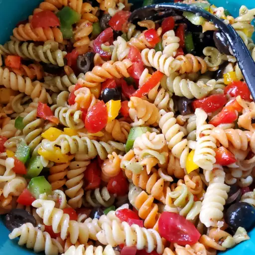

Super easy pasta salad recipe.
You will need:
Bring a large pot of lightly salted water to a boil. Cook pasta in the boiling water, stirring occasionally, until tender yet firm to the bite, about 10 to 12 minutes; rinse under cold water and drain.
Whisk Italian dressing and salad spice mix together until smooth.
Combine pasta, tomatoes, bell peppers, and olives in a salad bowl; pour dressing over salad and toss to coat. Refrigerate salad, 8 hours to overnight.
